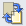

Stitch Assist allows you to scan the left and right halves of a large document separately and combine the scanned images back into one image. You can scan documents that are up to twice as large as the Platen.
Start MP Navigator EX and open the Navigation Mode screen.
 Note
NoteYou can complete from scanning to saving, etc. at one time by simply clicking the corresponding icon in the One-click Mode screen. Stitch Assist is available from the One-click Mode screen as well, by changing the document size. Click the corresponding icon and select Stitch Assist for Document Size. Then skip ahead to Step 5.
In Scan/Import, click Photos/Documents (Platen).
Select Document Type according to the document to be scanned.
Click Specify....
Select Stitch Assist for Document Size, then specify the scanning resolution as required.
When setting is completed, click OK.
 Scan Settings Dialog (Photos/Documents)
Scan Settings Dialog (Photos/Documents)
Click Scan.

The Stitch-assist window opens.
Place the left half of the document face-down on the Platen.
Click Scan.
The left half of the document is scanned and appears in the Stitch-assist window.
NoteClick Cancel to cancel the scan.
Place the right half of the document face-down on the Platen.
Click Scan.
The right half of the document is scanned.
NoteClick Cancel to cancel the scan.
Adjust the scanned image as required.
Use the icons to swap the left and right halves, rotate the image 180 degrees or enlarge/reduce the image.
 (Swap Left & Right)
Swaps the left and right halves.
 Important
ImportantThis function is not available while the image is enlarged/reduced.
Rotate 180°
Rotates right half of the image 180 degrees.
ImportantThis function is not available while the image is enlarged/reduced.
 (Enlarge)
(Enlarge)
Enlarges the displayed image.
 (Reduce)
(Reduce)
Reduces the displayed image.
 (Full-screen)
(Full-screen)
Displays the entire image.
NoteEnlarge/Reduce does not affect the actual size of the scanned image.
When the document is scanned upside down, the image displayed in the Stitch-assist window will also be upside down. Click Rotate 180° to rotate the image to the correct orientation.
You can drag the right half of the image from right to left or up and down to adjust the position.
If the left and right halves do not match due to a slanted document, place the document correctly and click Back, then scan again.
Click Next.
Drag the mouse to specify the area to be saved, then click OK.
The combined image is created.
When scanning is completed, a dialog opens. Select Scan or Exit. Select Scan to scan the next document, or select Exit to end.
The scanned images appear in the Thumbnail window.
Save the scanned images.